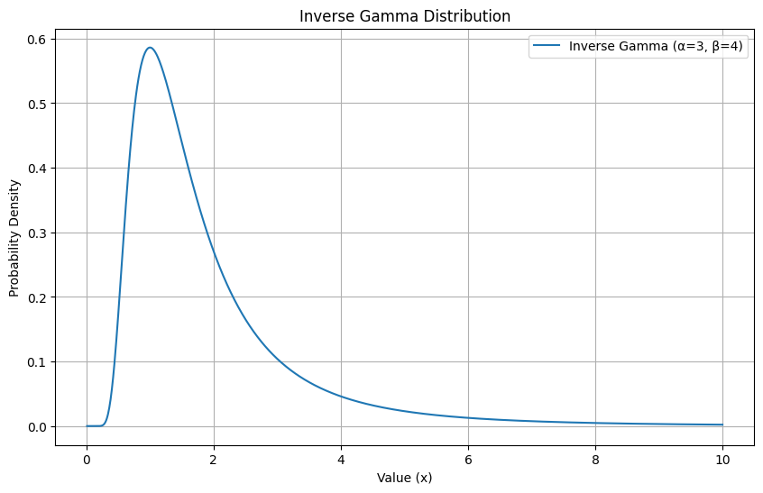
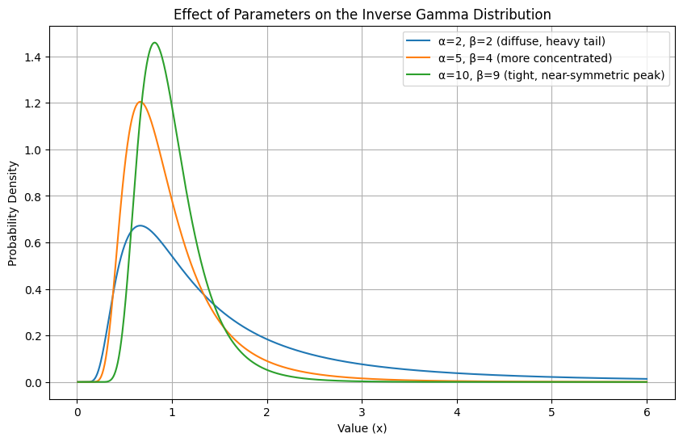
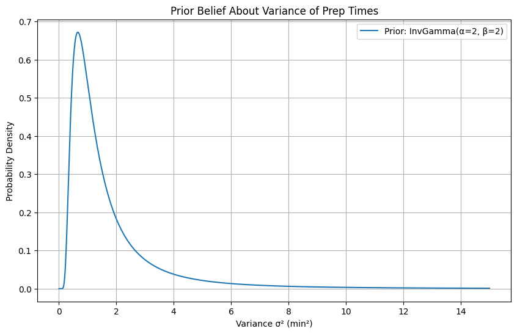
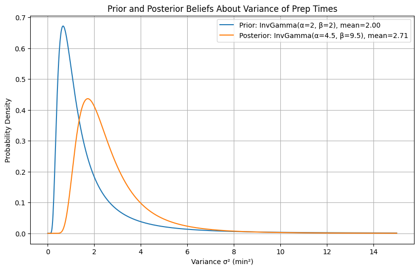

The Normal-Inverse Gamma conjugate is a very useful conjugate pair that actually shows up in Causal Impact and many other solutions.
Let’s try to understand how they play together.
12.1 Inverse Gamma Distribution
The Inverse Gamma distribution is a continuous probability distribution defined for positive values (from 0 to infinity). As the name suggests, it is directly related to the Gamma distribution - if a random variable X follows a Gamma distribution, then 1/X follows an Inverse Gamma distribution.
Like the Gamma distribution, it is defined by two positive parameters, α (shape) and β (scale), and is commonly used as a conjugate prior in Bayesian statistics, particularly for parameters that represent variance in a Normal distribution.
The Probability Density Function (PDF) for the Inverse Gamma distribution is:
Γ(α) is the Gamma function evaluated at α (a generalization of the factorial)
Notice that unlike the Normal distribution’s PDF, the negative exponential here involves β/x rather than x itself - this is what “flips” the Gamma distribution and constrains values to be positive while producing a right-skewed shape.
Code
import numpy as npimport matplotlib.pyplot as pltfrom scipy.stats import invgamma# Parameters for the Inverse Gamma distributionalpha =3# Shape parameterbeta =4# Scale parameter# Generate x values (must be positive)x = np.linspace(0.01, 10, 1000)# Calculate the PDFpdf_values = invgamma.pdf(x, a=alpha, scale=beta)# Create the plotplt.figure(figsize=(10, 6))plt.plot(x, pdf_values, label=f'Inverse Gamma (α={alpha}, β={beta})')# Add title and labelsplt.title("Inverse Gamma Distribution")plt.xlabel("Value (x)")plt.ylabel("Probability Density")plt.legend()plt.grid(True)plt.show()

A few things to notice about the shape:
The distribution is right-skewed and only defined for positive values - this makes it well-suited for modeling quantities like variance, which can never be negative
The peak of the distribution (the mode) is at β / (α + 1)
The mean of the distribution is β / (α - 1), but only exists when α > 1
The shape parameter α controls how peaked or spread out the distribution is, while β controls where the bulk of the mass sits along the x-axis.
Code
import numpy as npimport matplotlib.pyplot as pltfrom scipy.stats import invgamma# Two different parameterizations to show the effect of alpha and betaparams = [ (2, 2, 'α=2, β=2 (diffuse, heavy tail)'), (5, 4, 'α=5, β=4 (more concentrated)'), (10, 9, 'α=10, β=9 (tight, near-symmetric peak)'),]x = np.linspace(0.01, 6, 1000)plt.figure(figsize=(10, 6))for alpha, beta, label in params: pdf_values = invgamma.pdf(x, a=alpha, scale=beta) plt.plot(x, pdf_values, label=label)plt.title("Effect of Parameters on the Inverse Gamma Distribution")plt.xlabel("Value (x)")plt.ylabel("Probability Density")plt.legend()plt.grid(True)plt.show()

As α increases (with β scaled proportionally), the distribution becomes more concentrated around its mean and the heavy right tail pulls in. With small α, the distribution is spread out with a heavy tail, expressing more uncertainty. With large α, the distribution is tighter, expressing strong beliefs about where the true value sits.
12.1.1 How Noisy Is Your Coffee Shop? Learning Variance Estimation
Imagine you manage a busy coffee shop and you pride yourself on consistent service. You know from years of experience that the average time to prepare an order is 5 minutes. That part you’re confident about. What you’re less sure about is the variance - how much does that prep time actually bounce around from order to order?
Some days everything flows perfectly and every drink comes out right at the 5 minute mark. Other days the espresso machine acts up, someone orders a complicated seasonal drink, and times scatter wildly. You want to quantify this - not just whether service is slow on average, but how unpredictable it is.
You record the preparation times for 5 random orders during a morning rush: 3, 6, 5, 8, and 4 minutes.
Knowing the mean is 5 minutes, you compute the sum of squared deviations from the mean:
You want to answer: given what you believe going in and what you just observed, what is the distribution of plausible variance values for your prep times?
This is exactly the kind of problem the Inverse Gamma was built for.
12.1.2 How Do We Use Inverse Gamma as a Prior?
When we model our prep times as a Normal distribution with a known mean μ and unknown variance σ², we need a prior over σ². The variance must be positive, it’s a continuous quantity, and we expect it to be right-skewed. Small variance is plausible but very large variance is unlikely. The Inverse Gamma checks all these boxes.
Based on your general experience before recording any data, you have a vague sense that order prep times vary by about 2 minutes² on average - enough to reflect some uncertainty but not total chaos. You choose a weakly informative prior:
This gives a prior mean variance of β / (α - 1) = 2 / 1 = 2 min².
Code
import numpy as npimport matplotlib.pyplot as pltfrom scipy.stats import invgamma# Prior parametersalpha_prior =2beta_prior =2x = np.linspace(0.01, 15, 1000)pdf_prior = invgamma.pdf(x, a=alpha_prior, scale=beta_prior)plt.figure(figsize=(10, 6))plt.plot(x, pdf_prior, label=f'Prior: InvGamma(α={alpha_prior}, β={beta_prior})')plt.title("Prior Belief About Variance of Prep Times")plt.xlabel("Variance σ² (min²)")plt.ylabel("Probability Density")plt.legend()plt.grid(True)plt.show()

The wide spread of this curve reflects that while we have a rough expectation, we are open to being corrected by the data.
12.1.3 Updating with Data: The Normal-Inverse Gamma Shortcut
Just as the Gamma distribution is a conjugate prior to the Poisson likelihood, the Inverse Gamma is a conjugate prior to the variance of a Normal distribution. This gives us a clean analytical shortcut to compute the posterior without ever evaluating a complex integral.
When we observe n data points from a Normal distribution with known mean μ, the posterior update rule is:
The posterior mean variance is now β / (α - 1) = 9.5 / 3.5 ≈ 2.71 min² — the data has nudged our belief upward from 2, because those observed prep times were more scattered than our prior expected.
Code
import numpy as npimport matplotlib.pyplot as pltfrom scipy.stats import invgamma# Prior parametersalpha_prior =2beta_prior =2# Datan =5SS =15# Sum of squared deviations: (3-5)^2 + (6-5)^2 + (5-5)^2 + (8-5)^2 + (4-5)^2# Posterior parameters (conjugate update)alpha_posterior = alpha_prior + n /2beta_posterior = beta_prior + SS /2x = np.linspace(0.01, 15, 1000)pdf_prior = invgamma.pdf(x, a=alpha_prior, scale=beta_prior)pdf_posterior = invgamma.pdf(x, a=alpha_posterior, scale=beta_posterior)plt.figure(figsize=(10, 6))plt.plot(x, pdf_prior, label=f'Prior: InvGamma(α={alpha_prior}, β={beta_prior}), mean={beta_prior/(alpha_prior-1):.2f}')plt.plot(x, pdf_posterior, label=f'Posterior: InvGamma(α={alpha_posterior}, β={beta_posterior}), mean={beta_posterior/(alpha_posterior-1):.2f}')plt.title("Prior and Posterior Beliefs About Variance of Prep Times")plt.xlabel("Variance σ² (min²)")plt.ylabel("Probability Density")plt.legend()plt.grid(True)plt.show()

Notice two things in the plot: the posterior has a higher mean (the data showed more variability than expected) and a narrower spread (we are now more certain because we have actual observations to learn from). The prior was wide and vague; the posterior is tighter and updated.
As you collect more data (more orders recorded over more days) you repeat this process. The posterior becomes the new prior and continues to sharpen:
Code
import numpy as npimport matplotlib.pyplot as pltfrom scipy.stats import invgamma# Simulate additional days of data collection# Day 1: 5 orders, SS=15 → posterior becomes (4.5, 9.5)# Day 2: 8 orders, SS=22# Day 3: 10 orders, SS=18observations = [ (5, 15), # (n, SS) for each batch (8, 22), (10, 18),]alpha =2beta =2labels = [f'Prior: InvGamma(α={alpha}, β={beta})']x = np.linspace(0.01, 15, 1000)pdfs = [invgamma.pdf(x, a=alpha, scale=beta)]for i, (n, SS) inenumerate(observations): alpha = alpha + n /2 beta = beta + SS /2 pdfs.append(invgamma.pdf(x, a=alpha, scale=beta)) labels.append(f'After Day {i+1}: InvGamma(α={alpha:.1f}, β={beta:.1f})')plt.figure(figsize=(10, 6))for pdf, label inzip(pdfs, labels): plt.plot(x, pdf, label=label)plt.title("Belief About Prep Time Variance Sharpens With More Data")plt.xlabel("Variance σ² (min²)")plt.ylabel("Probability Density")plt.legend()plt.grid(True)plt.show()
Each new batch of orders pulls the distribution tighter and repositions it based on what the data shows. After three days of observation, you have a much more precise picture of how variable your prep times really are and can make concrete decisions about staffing or workflow improvements.
12.1.4 Key Takeaways
The Inverse Gamma is the natural distribution for reasoning about variance (ie spread) in a Bayesian framework.
It is defined only for positive values, which makes sense since variance can never be negative
The shape parameter α controls how concentrated the distribution is; larger α means stronger beliefs
The scale parameter β controls the location of the mass; larger β means beliefs centered on higher variance values
The mean of the distribution is β / (α - 1) and only exists for α > 1
The mode (the most probable value) is always β / (α + 1)
The Normal-Inverse Gamma conjugate relationship gives us the same kind of clean analytical shortcut we saw with Gamma-Poisson:
This lets us update our beliefs about variance after observing data without ever computing a difficult integral - the posterior is always another Inverse Gamma, and we can simply plug in the updated parameters.
As with all conjugate priors, this is mathematically convenient and interpretable. Each new batch of data adds n/2 to our shape (making us more certain) and SS/2 to our scale (shifting our belief to reflect what the data actually showed).